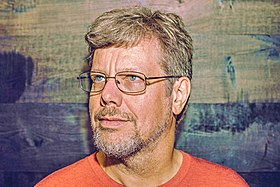

PYTHON
Python is an interpreted, high-level, general-purpose programming language. Created by Guido van Rossum and first released in 1991, Python's design philosophy emphasizes code readability with its notable use of significant whitespace. Its language constructs and object-oriented approach aim to help programmers write clear, logical code for small and large-scale projects.[28]
python
| Python 1.0 |
January 1994 |
Python 2.0 |
16 October 2000 |
Python 3.0, |
3 December 2008 |
Python 3.8.2, |
24 February 2020. |
Jaidu Van Rusem
Guido van Rossum (Guido van Rossum) is a programmer Dutch known as the creator of the programming language Python . In the Python
community, Guido has been defined as a "lifelong charitable dictator" meaning that he continues to monitor the progress of Python
development, making decisions when needed until he abdicates that position on June 12, 2018 . He currently works on Google
where he spends part of his time developing Python
